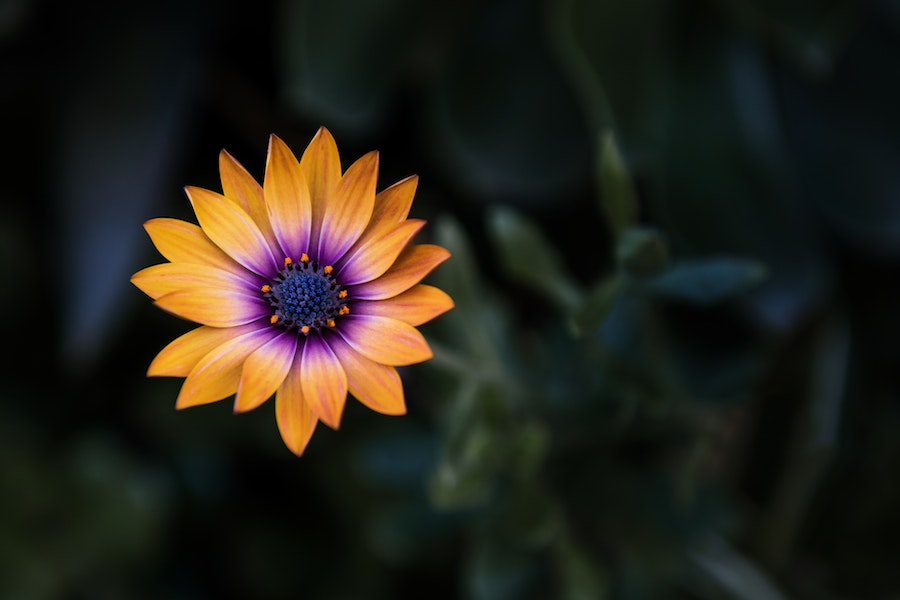
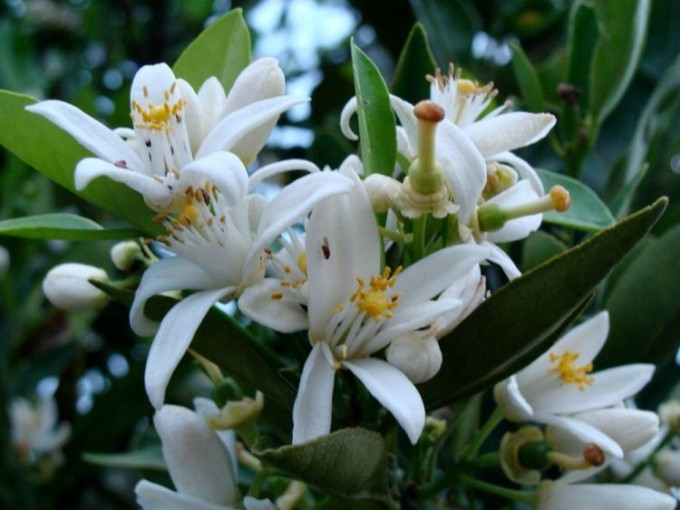

Imagens




A flor de laranjeira é nativa da região do Mediterrâneo e é cultivada em várias partes do mundo, especialmente em regiões com climas quentes e adequados para o cultivo de laranjas.
As flores de laranjeira são conhecidas por sua fragrância doce e floral, com notas cítricas suaves. O óleo essencial de flor de laranjeira é amplamente utilizado na fabricação de perfumes e produtos aromáticos.
As flores de laranjeira são usadas em culinária, especialmente na confeitaria e na preparação de sobremesas. A água de flor de laranjeira, conhecida como "água de flor de laranjeira," é usada para aromatizar bolos, doces, geleias e bebidas.
As flores de laranjeira também podem ser usadas para preparar chás e infusões que são apreciados por seu sabor e efeitos calmantes. O chá de flor de laranjeira é frequentemente consumido antes de dormir para promover o relaxamento.
O óleo essencial de flor de laranjeira é utilizado na aromaterapia devido às suas propriedades relaxantes e calmantes. Ele é usado para aliviar o estresse, a ansiedade e promover o bem-estar emocional.
Na medicina tradicional, a flor de laranjeira é valorizada por suas propriedades medicinais, incluindo a capacidade de aliviar distúrbios digestivos e promover a saúde do sistema nervoso.
As flores de laranjeira são uma fonte valiosa de óleo essencial na indústria de perfumaria. Seu aroma delicado e agradável é usado como nota de topo em muitos perfumes.
A essência de flor de laranjeira é frequentemente utilizada em produtos cosméticos e de cuidado com a pele devido às suas propriedades calmantes e rejuvenescedoras.
Em várias culturas, a flor de laranjeira tem significados simbólicos e é usada em cerimônias de casamento, festivais religiosos e outros eventos especiais.
A colheita das flores de laranjeira para a produção de óleo essencial é feita de forma sustentável para preservar os ecossistemas e garantir a continuidade dessa valiosa fonte de fragrância.
O óleo essencial de flor de laranjeira é uma das formas mais valiosas de extrato da planta. Os preços podem variar de acordo com a pureza e a fonte, mas em geral, o óleo essencial de alta qualidade pode ser relativamente caro, custando de dezenas a centenas de reais por frasco, dependendo do volume e da marca.
A água de flor de laranjeira, usada na culinária e em produtos de cuidado com a pele, é geralmente mais acessível em comparação com o óleo essencial. Pequenas garrafas de água de flor de laranjeira podem ser encontradas por preços que variam de R$ 10 a R$ 50, dependendo da marca e do tamanho.
Cosméticos, loções e produtos de cuidado com a pele que contenham essência de flor de laranjeira podem variar em preço. Os produtos de marcas premium tendem a ser mais caros, enquanto os produtos de marcas mais acessíveis podem ter preços a partir de R$ 20.
Os chás de flor de laranjeira geralmente são acessíveis e podem ser encontrados por preços que variam de R$ 10 a R$ 30 por caixa, dependendo da marca e da qualidade das folhas.
Produtos artesanais, como sabonetes ou velas aromáticas feitas com óleo essencial de flor de laranjeira, podem ter preços variados, dependendo do artesão e da qualidade dos ingredientes utilizados.
Se você estiver interessado em cultivar sua própria flor de laranjeira, o preço de uma planta pode variar amplamente com base no tamanho e na idade da planta. Pequenas mudas podem ser encontradas por preços a partir de R$ 20, enquanto plantas maiores e mais maduras podem custar mais.